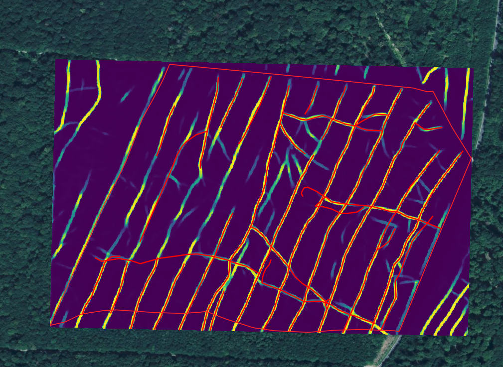
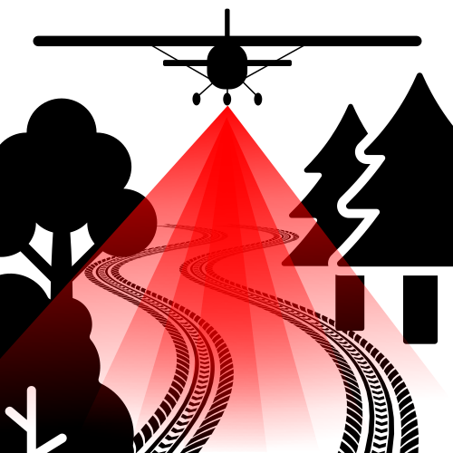
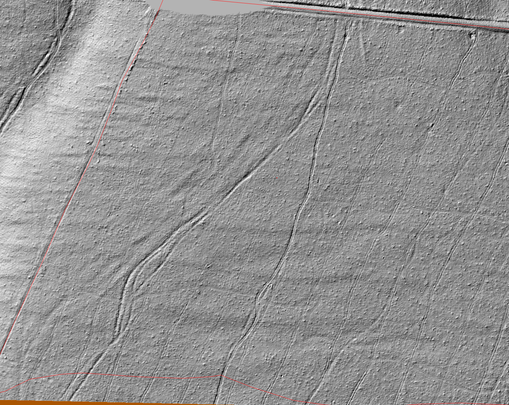
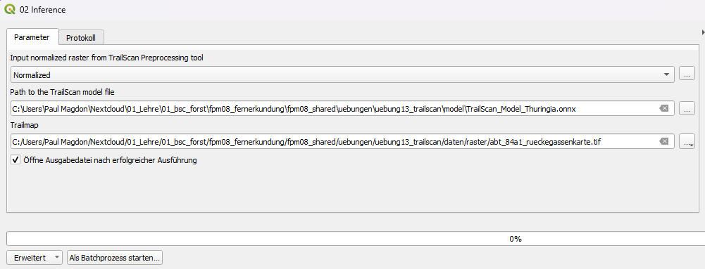
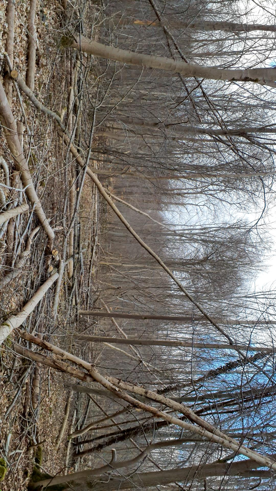
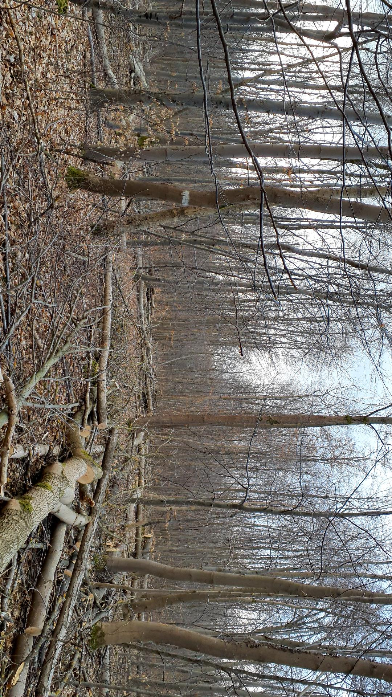
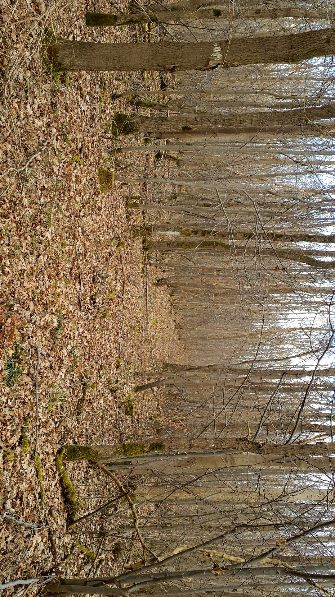

13 Lerneinheit 13: Kartierung von Rückegassen mit ALS-Daten

In dieser Lehreinheit wird vorgestellt, wie ALS-Daten für die digitale Kartierung von forstlichen Rückegassen genutzt werden können. Als Fallbeispiel dient ein Bestand nahe der Ortschaft Menteroda in Thüringen. Hier soll im ersten Schritt eine Kartierung durch visuelle Interpretation der aufbereiteten Geländemodelle erfolgen. Anschließend wird das, von der HAWK entwickelte, TrailScan-Plugin genutzt, um mithilfe eine CNN-Modells die vorhandenen Rückegassen automatisch zu kartieren.
13.1 Lernziele & Aufgabenstellung
Lernziele
Die Studierenden sollen:
Aus ALS-Daten Gelände- und Mikroreliefmodell ableiten um diese für die visuelle Kartierung von Rückegassen in Waldbeständen zu nutzen
Mithilfe eines bereits trainierten KI-Modells die Rückegassen automatisch kartieren.
Die Ergebnisse beider Ansätze sollen verglichen und diskutiert werden.
Aufgaben
Raster- und Vektordaten importieren
Berechnung des Gelände- und Mikroreliefmodells
Visuelle Kartierung der Rückegassen
Automatisierte Kartierung der Rückegassen
13.2 Aufgabe 0: Anlegen eine neuen QGIS-Projektes und Kontrolle des Nutzerprofils
Folgen sie der Anleitung aus LE01 Kapitel 1.3 um eine neue Ordnerstruktur und ein neues QGIS-Projekt anzulegen. In der Übung bietet es sich an den Ordner “daten” weiter in die Unterordner “vektor” und “raster” zu unterteilen. Zusätzlich ist es für diese Übung sinnvoll einen Ordner “modelle” anzulegen. Prüfen sie außerdem ob Ihr Nutzerprofil korrekt geladen wurde und ob die OTB-Funktionen im Werkzeugkasten vorhanden sind. Sollte dies nicht der Fall sein stellen sie ihr gesichertes Nutzerprofil wieder her (siehe auch LE01 Kapitel 1.2.4).
13.3 Aufgabe 01: Download und Import der Geodaten
13.3.1 ALS-basierte Höhendaten
Für die Übung verwenden wir Höhendaten des Thüringer Landesamts für Bodenmanagement und Geoinformation (TLBG). Diese Höhendaten wurden mit Hilfe eines Airborne Laser Scanners (ALS) im Februar 2023 erfasst. Das TLBG stellt sowohl die Punktinformation (LAZ), als auch bereits gerasterte digitale Geländemodelle (DGM) und digitale Oberflächenmodelle (DOM) mit einer räumlichen Auflösung von 1m zur Verfügung. Für die Übung verwenden wir Punktwolkendaten. Um die Rechen- und Downloadzeiten zu verkürzen, wurden diese Daten bereits heruntergeladen und auf den Bestand zugeschnitten. Der vorbereitete ALS-Datensatz kann als copc.laz Datei unter folgendem Link heruntergeladen werden:
13.3.2 Vektordaten
Für die Übung arbeiten wir mit einem Bestanden 84a1. Sie finden ein Geopackage mit den Außengrenzen des Bestandes unter folgendem Link:
https://cloud.hawk.de/index.php/s/K2MGpFCycyroYMK
Im Rahmen des TrailScan-Projektes der HAWK wurden in einer Teilfläche des Bestandes die vorhandenen Rückegassen mit einem differenziellen GNSS-Empfänger eingemessen. Diese Daten sollten zur Validierung genutzt werden und können unter folgendem Link heruntergeladen werden:
13.4 Aufgabe 02: Berechnung der ALS-Rasterkarten für die Kartierung der Rückegassen
Für die visuelle und automatisierte Kartierung der Rückegassen werden aus den ALS-Punktwolken vier Rasterkarten mit einer räumlichen Auflösung von 25cm abgeleitet: Geländemodell (DGM), Vegetationshöhenmodell (VHM), Mikroreliefmodell (MRM) und Vegetationsdichte (VI). Die Berechnung dieser Rasterkarten kann mit dem TrailScan-Plugin automatisiert durchgeführt werden.
13.4.1 Installation des TrailScan-Plugins

Zur Installation des TrailScan-Plugins öffnen sie Menü->Erweiterungen->Erweiterungen verwalten und suchen sie dort nach der Erweiterung “TrailScan“. Nach der erfolgreichen Installation sollten sie das TrailScan Tool unter in den Verarbeitungswerkzeugen angezeigt bekommen.
13.4.2 Berechnung der ALS-Rasterkarten /Pre-Processing
Das TrailScan-Plugin bietet zwei Funktionen “Pre-Processing Point Cloud” und “Inference”. Mit der ersten Funktion können die genannten Rasterkarten erzeugt werden die sie unter Verarbeitung->Werkzeugkiste-TrailSCan>01 Preprocessing Point Cloud öffnen können. Hier können folgende Werte gesetzt werden:
input point cloud: abt_81_a1.copc”
Normalized: “abt_84a1_normalized.tif” (Im Ordner raster!)
Diese Berechnung kann mehrere Minuten dauern. Als Ergebnis wird ein neues Raster mit vier Bändern ausgegeben.
13.4.3 Visualisierung des Geländemodells
Das TrailScan-Plugin erzeugt ein hochauflösendes DGM welches im ersten Band der Datei “abt_84a1_normalized.tif” gespeichert ist. Für die spätere automatisierte Auswertung werden die Pixelwerte auf den Wertebereich 0-1 normiert. Dadurch können die Pixelwerte des DGM nicht direkt als Höhenangabe interpretiert werden. Die relativen Abstufungen sind aber noch erhalten, so dass sich das DGM sehr gut als Schummerungsbild darstellen lässt. Dazu kann die Schummerung direkt unter Layereigenschaften-> Symbolisierung->Darstellungsart->Schummerung. ausgewählt werden. Aufgrund der Normierung des Wertebereiches muss der Z-Faktor auf 100 gesetzt werden.

13.4.4 Visualisierung des Mikroreliefmodells (MRM)
Neben dem Geländemodell wird auch ein Mikroreliefmodell erzeugt und im Band 2 des Rasters “abt_84a1_normalized.tif” gespeichert. Dieses Raster zeigt die lokalen Unterschiede in der Steigung und hebt dadurch besonders die kleinräumigen Änderungen z.B. Spurrillen hervor. Erstellen sie eine Kopie des Layers “abt_84a1_normalized.tif” und wählen sie für diese Kopie die Darstellung als eine Einkanalgraustufenbild.
13.5 Aufgabe 03: Visuelle Kartierung der Rückegassen
Zur visuellen Kartierung der Rückegassen legen sie ein neuen Layer mit dem Namen rueckegassen und dem Geometrietype “Linie” in einem neuen Geopackage mit dem Namen erschliessung.gpkg in ihrem Projektordner unter vektor an. Achten sie darauf das der Layer das korrekte Koordinatenreferenzsystem verwendet.
Hinweise zur Kartierung:
Bitte notieren sie die Zeit die sie für die Erfassung benötigen. Kartieren sie alle sichtbaren Rückegassen als Linie mittig zwischen den zwei Fahrspuren. Nutzen sie dafür sowohl das DTM als auch das MRM. Bei der visuellen Kartierung sollten alle sichtbaren Fahrspuren möglichst genau digitalisiert werden. Dabei sollten nur vorhandene Befahrungen kartiert werden und nicht etwa idealisierte Linien. Das heißt es können auch unterbrochene Fahrlinien kartiert werden, oder Linien die im Bestand endet und nicht mit anderen verbunden sind.
Frage:
Wie lange haben sie für die Kartierung benötigt?
Gibt es Bildbereiche in denen die Kartierung einfache oder schwieriger ist?
Wie beurteilen sie die Erschließung des Bestandes?
13.6 Aufgabe 04: Automatisierte Kartierung der Rückegassen
Im nächsten Schritt soll für den gleichen Bereich eine automatisierte Kartierung mit dem TrailScan-Plugin erfolgen. Öffnen sie dazu die Funktion “02 Inference” des Plugins in der Werkzeugkiste.
Damit die Rückegassen automatisiert Klassifiziert werden können benötigt das Plugin ein bereits trainiertes KI-Modell. Dieses wurde bereits für Thüringen erstellt und veröffentlicht und kann auf folgender Seite heruntergeladen werden: https://doi.org/10.25625/GEIP6T.
Laden sie die Datei TrailScan_Model_Thueringia.onnx und speicher sie diese in ihrem Projektordner z.B. im Ordner “modelle”. Geben sie im TrailScan-Plugin anschließend den korrekten Pfad zum Model an. Dem Output können sie im “raster” Ordner mit unter ab7_84a1_rueckegassenkarte.tif abspeichern.

Als Output erhalten wir eine Rasterkarte mit dem Wertebereich 0-1. Die Pixelwerte geben dabei die Wahrscheinlichkeit an mit der es sich bei dem Pixel um eine Rückegasse handelt. Ändern sie die Darstellung der Rasterkarte so, dass eine gut sichtbare Farbpalette verwendet wird (siehe Cover-Bild oben).
13.7 Aufgabe 05: Vergleich der beiden Verfahren
Im letzten Schritt sollen die beiden Verfahren miteinander verglichen werden. Überlagern sie dazu:
1) die TrailScan-Rückegassenkarte
2) die von Ihnen visuell interpretierten Rückegassen
3) die GNSS-Aufnahmen
Die GNSS-Aufnahmen wurden im Winter 2025 durchgeführt. Dabei wurden auch Fotos der Rückegassen aufgenommen:



Fragen:
Wie unterscheiden sich die Qualität der visuellen und der automatisiert Kartieren Rückegassen?
Können im Nachhinein Rückegassen im DTM und MRM gefunden werden, die ohne die automatische Kartierung nicht gefunden wurden?
Welche Zeitersparnis ergibt sich durch die automatisierte Kartierung?